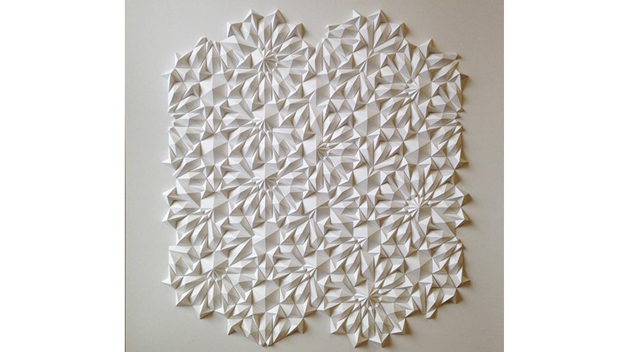

minimal

Matthew Shilan
http://www.thisiscolossal.com/2017/01/new-geometric-paper-sculptures-from-matthew-shlian/-どんな人
紙を折って幾何学的なパターンを作っているアーティストです。 半立体の特徴を活かして、光の陰影をうまく利用した作品を多く作っています。
-解説
この作品は、折ることによって立体的な凹凸がつけられた紙のパーツを規則的に配置して作っています。元は全て白い紙からできていますが、折り目をつけることによって、影のつき方が面によって代わり、面白い模様があらわれています。紙を折るにも、隙間なく配置するにも、手先の正確さがなければできない作品です。
-好きなところ
面によって影の濃さがはっきりわかれますが、同じ面でも影の濃度が折り目に近いほうが若干濃かったりするなど違いが見られます。紙の質感や影のつき方などはデザインの面でも参考になるのではないでしょうか。